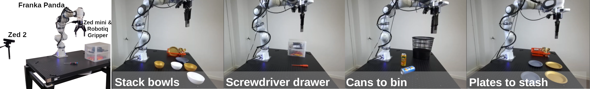
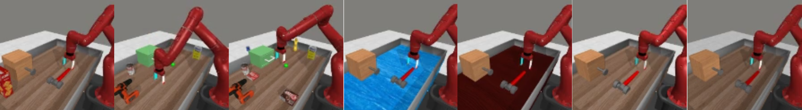
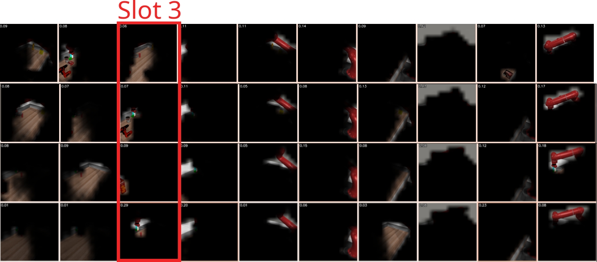
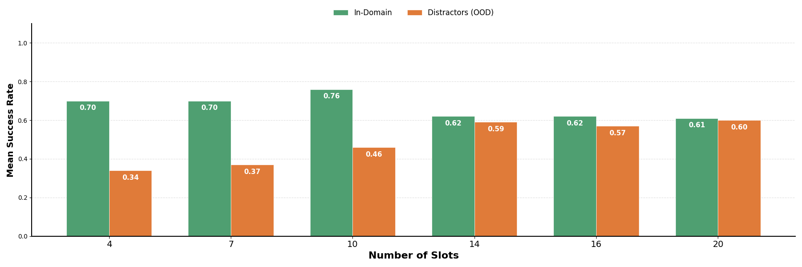

Experimental Results
We evaluated DINOSAUR* and DINOSAUR-Rob* against dominant global (VC-1, R3M), dense (DINOv2, Theia, ResNet-50), and segmentation-driven (SAM+DINOv2) baselines. Our evaluation spanned simulated environments (MetaWorld, LIBERO) and real-world Franka deployments.

Figure 3: Overview of the real-world robotic setup using a Franka arm across four tabletop tasks: Stacking bowls, Screwdriver Drawer, Cans to bin, and Plates to stash.
Generalization Under Visual Distribution Shifts
Object-centric models generalize substantially better than dense and global representations under realistic out-of-distribution (OOD) scenarios.



Figure 4: Overview of generalization scenarios including novel distractors, unseen textures, and lighting changes applied to simulated environments (top) and real-world setups (bottom).
| Model | Distractors | Textures | Lighting | Overall OOD |
|---|---|---|---|---|
| ResNet-50 | 0.04 | 0.00 | 0.22 | 0.10 |
| DINOv2 | 0.11 | 0.03 | 0.39 | 0.18 |
| Theia | 0.65 | 0.28 | 0.48 | 0.47 |
| DINOSAUR* (Ours) | 0.21 | 0.48 | 0.71 | 0.46 |
| DINOSAUR-Rob* (Ours) | 0.46 | 0.36 | 0.65 | 0.49 |
Table 1: Out-of-Distribution Success Rates in MetaWorld.
| Model | Distractors | Textures | Overall OOD |
|---|---|---|---|
| ResNet-50 | 0.15 | 0.10 | 0.12 |
| DINOv2 / Theia | 0.06 | 0.08 | 0.07 |
| DINOSAUR* (Ours) | 0.27 | 0.29 | 0.28 |
| DINOSAUR-Rob* (Ours) | 0.37 | 0.44 | 0.41 |
Table 2: Out-of-Distribution Success Rates on the Real Robot.
Failure Modes & The Capacity Trade-off
Through qualitative analysis, we identified slot merging as the primary bottleneck for object-centric policies. When objects outnumber the available slots (K), features from novel distractors leak into task-relevant slots, polluting the state representation.
- Under-segmentation (K < 10): Reducing slot capacity forces harmful merging, dropping OOD success rates dramatically (down to 34% at K=4).
- Increased Capacity (K > 10): Increasing the slot budget (e.g., K=20) allows the encoder to isolate novel distractors, improving OOD robustness up to 60%. However, this introduces a trade-off: flooding the policy with a noisier, higher-dimensional state space degrades In-Domain performance.

Figure 5: Qualitative analysis showing slot merging failures under hard, medium, and easy distractor levels (K=10).

Figure 6: The capacity trade-off: Impact of varying slot numbers (K) on In-Domain vs. Out-of-Domain success rates.
Real-World Scene Diversity
To rigorously test our policies under real-world conditions, we evaluated the Franka arm across a highly diverse set of configurations. The gallery below demonstrates the variance in object starting positions.


Figure 7: Real-world inference scene diversity showcasing task executions under varying spatial configurations and novel distractors.